Séance 1 - Pétrologie magmatique : introduction du cours + les constituants de la Terre
Plan du cours
Format des séances
Chaque séance (cours et travaux pratiques) sera organisée en deux blocs de 45 minutes, avec des questions durant les cinq dernières minutes. Les deux blocs seront espacés d’une pause de 15 minutes. Nous voulons un cours aussi interactif que possible : posez des questions et interagissez à tout moment !
| Temps | Contenu | Objectif |
|---|---|---|
| 0-40 min | Introduction, objectifs et organisation | Comprendre le cadre du cours |
| 40-45 min | Questions générales | |
| 45-60 min | Pause | |
| 60-100 min | Formation, structure et composition de la Terre | L’origine du magmatisme |
| 100-105 min | Questions générales |
Disponibilité du matériel du cours sur Moodle et Github 🌐 : lien direct vers le site du cours où chaque séance sera mise à jour chaque mardi pour que vous puissiez prendre des notes directement sur les slides si vous le souhaitez. Nom Moodle : SST.02208 Pétrologie magmatique [SA-2026]
Présence aux cours : Vous pouvez retrouver les notions principales sur le cours en ligne. Cependant, votre présence en cours est nécessaire pour comprendre le fonctionnement des concepts abordés.
Mon parcours
| Étape | Lieu |
|---|---|
| Bachelor 1 & 2 | Université Blaise Pascal (UBP), Clermont-Ferrand (France) 📚 |
| Bachelor 3 | University of Iceland (UGLA), Reykjavik (Islande) 🥶 |
| Master 1 & 2 | Université Clermont Auvergne (UCA), Clermont-Ferrand (France) 🌋 |
| PhD | Laboratoire Magmas et Volcans (LMV), Clermont-Ferrand (France) + Observatoire Volcanologique du Piton de La Fournaise (OVPF), La Réunion (France) 🏖️ |
| Postdoc 1 | Observatoire de Physique du Globe de Clermont-Ferrand (OPGC), Clermont-Ferrand (France) 🌍 |
| Postdoc 2 | Ludwig-Maximilians-Universität (LMU), Munich (Allemagne) 🔬 |
| Postdoc 3 | Université de Genève (UNIGE), Genève (Suisse) 🌋 |
| Maître-Assistant | Université de Fribourg (UNIFR), Fribourg (Suisse) 👨🏻🏫 |
Profil
Maître-Assistant (MA)
- Fonction d’enseignant-chercheur
- Arrivé en septembre 2026 à l’Université de Fribourg
Spécialités
- Volcanologie physique
- Pétrologie magmatique
Autres enseignements
- Introduction aux géosciences (1ère année de Bachelor)
- Géologie et société (1ère année de Bachelor)
- Microscopie optique (2ème année de Bachelor)
- Excursions sur le terrain
Activités de recherche
- Responsable du Microscope Électronique à Balayage (MEB)
- Possibilité de stages Bachelor ou Master
- Thématiques autour du lien entre magmas et processus volcaniques
Microscopie Électronique
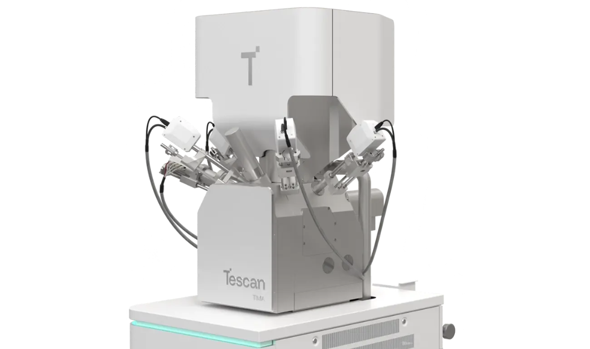
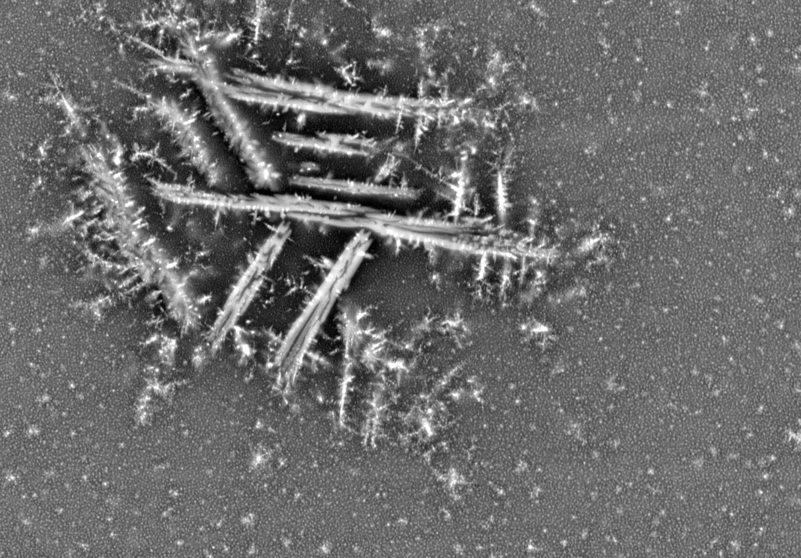
Sujets d’études majeurs
Piton de la Fournaise (La Réunion, France)
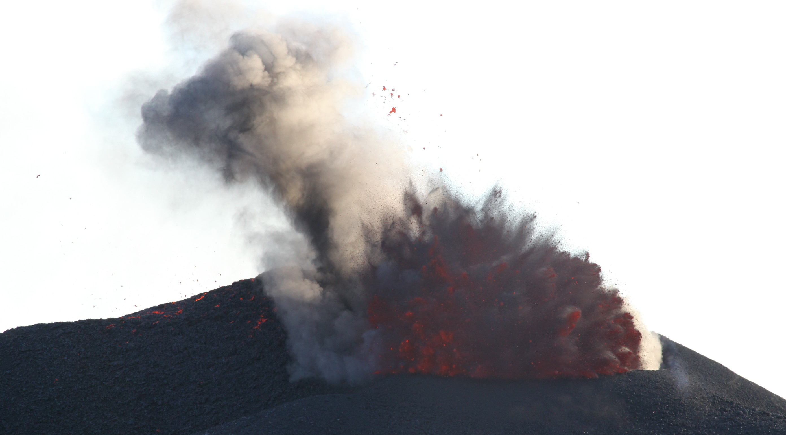

Objectif de recherche
Quels sont les précurseurs et les mécanismes des éruptions ? Quels processus magmatiques contrôlent les changements de dynamisme éruptif au cours d’une même éruption ?
Réponses à travers l’analyse pétrologique des échantillons récoltés.
Sujets d’études majeurs
Fani Maoré (Mayotte, France)
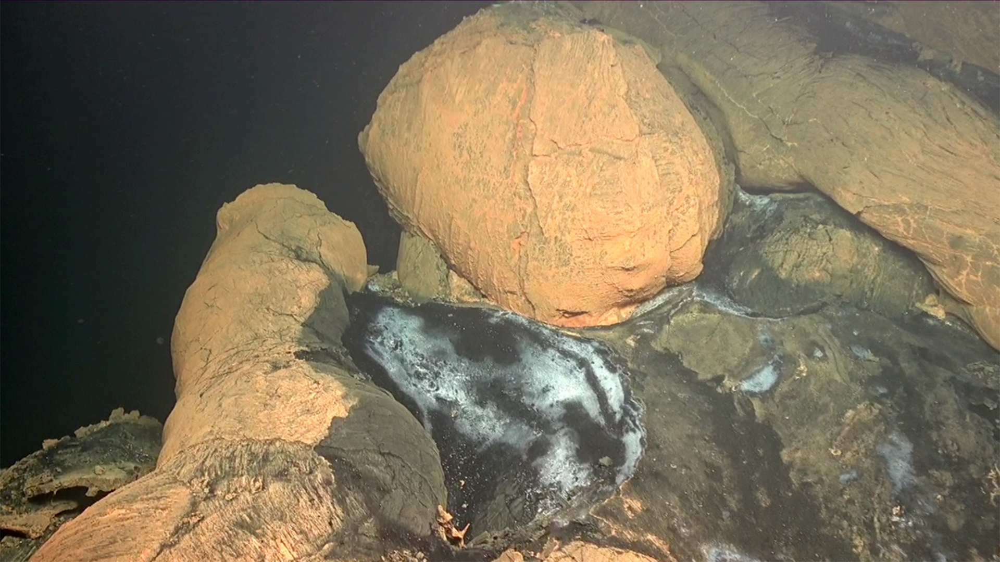
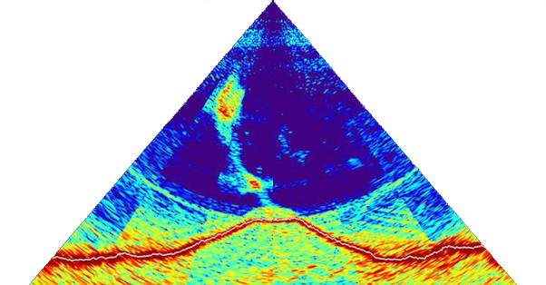
Objectif de recherche
Comment se solidifie une lave sous-marine ? Peut-elle se fragmenter pour devenir explosive ?
Réponses à travers l’analyse pétrologique des échantillons récoltés.
Sujets d’études majeurs
Karthala (Grande Comore, Comores)
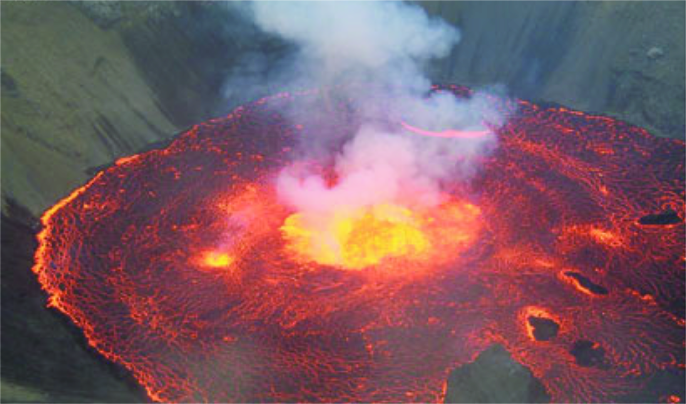
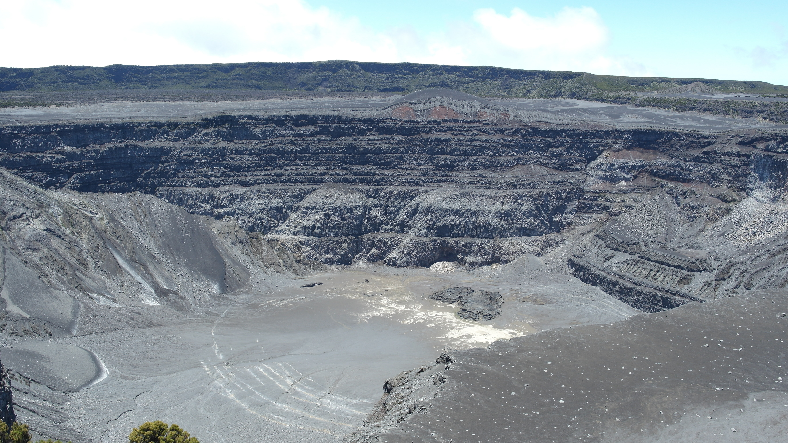
Objectif de recherche
Comment interagissent le magma et les fluides externes de la croûte superficielle lors des éruptions volcaniques explosives, dites phréatomagmatiques ?
Réponses à travers l’analyse pétrologique des échantillons récoltés.
Sujets d’études majeurs
Sakurajima (Kyūshū, Japon)
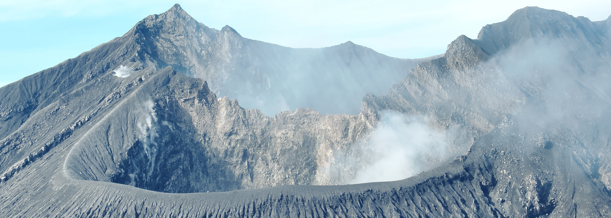
Objectif de recherche
Comment sédimentent les particules volcaniques une fois injectées dans l’atmosphère ? Quels processus contrôlent le processus d’agrégation des cendres ?
Réponses à travers l’analyse pétrologique des échantillons récoltés.
Sujets d’études majeurs
Stromboli (Stromboli, Italie)
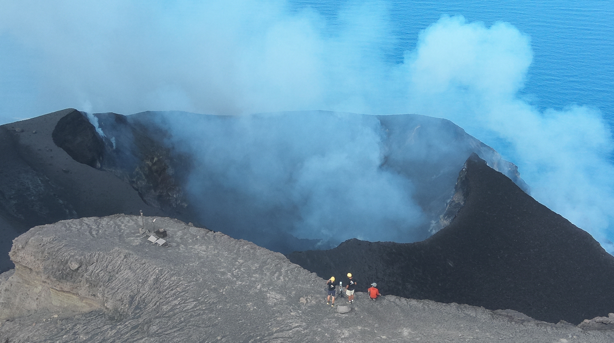
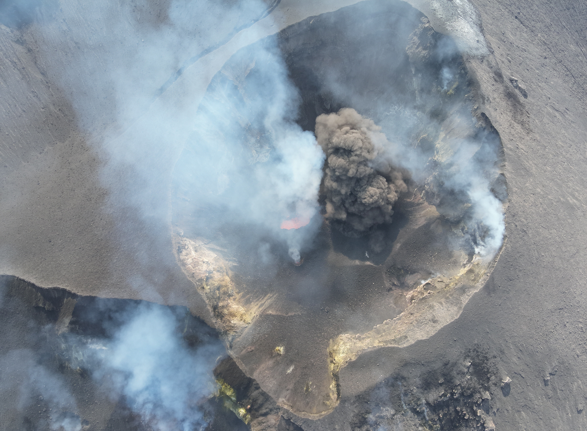
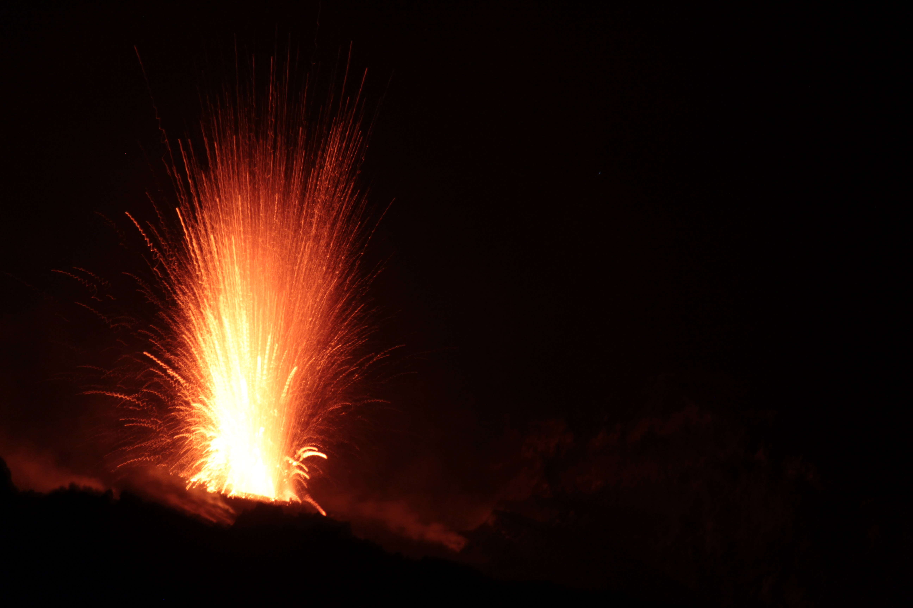
Objectif de recherche
De quoi est constitué un panache volcanique et comment évolue-t-il dans l’atmosphère ?
Réponses à travers l’analyse pétrologique des échantillons récoltés.
Sujets d’études majeurs
Etna (Italie)
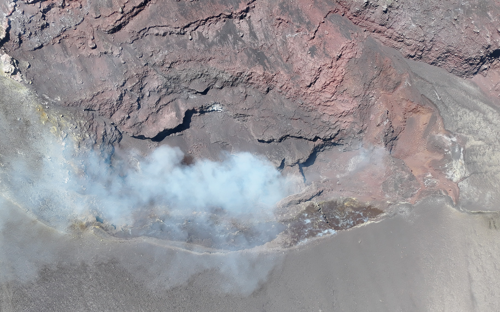
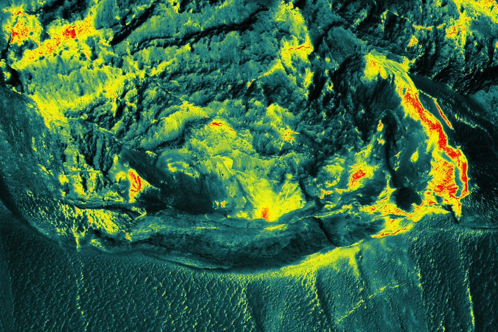
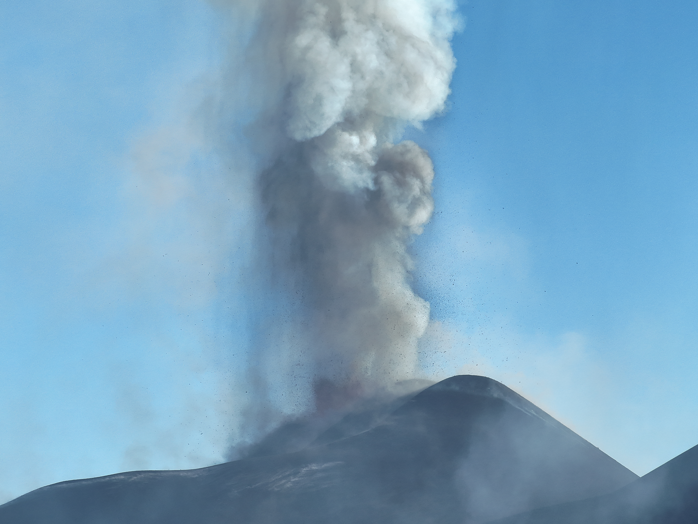
Objectif de recherche
Quels sont les mécanismes déclencheurs d’une éruption ? Comment se forme un panache volcanique ? Comment évolue-t-il dans l’atmosphère ?
Réponses à travers l’analyse pétrologique des échantillons récoltés.
Qu’est-ce que la pétrologie magmatique ?
“Pétrologie”
La pétrologie est la branche de la géologie qui étudie les roches : leur composition et leur texture, afin de reconstituer les processus responsables de leur formation, de leur évolution et de leur mise en place définitive.


Voici trois roches magmatiques avec des caractéristiques, des origines, des histoires et des processus géologiques plus ou moins différents, dont nous pouvons reconstituer l’histoire grâce à la pétrologie.
“Magmatique”
Qui concerne les roches formées par la solidification d’un magma.

Le magma sort de la Terre sous forme de lave (forme massive) ou de téphras et de pyroclastes (forme fragmentée) qui refroidissent, formant des roches volcaniques. Les roches plutoniques se forment par refroidissement de magmas en profondeur.
Pourquoi étudier la pétrologie magmatique ?
Sur quoi les roches magmatiques nous renseignent-elles ?
- L’histoire, la structure, la composition et les conditions physico-chimiques de la Terre (Séance 1)
- La nature géochimique des différents réservoirs magmatiques terrestres (Séance 4)
- Les conditions de fusion des roches (Séance 5)
- L’évolution des magmas à travers le manteau et la croûte terrestre (Séances 6 & 7)
- Le destin des magmas en roches plutoniques ou volcaniques (Séances 8 & 9)
- Le fonctionnement de la tectonique des plaques (Séance 10)
- Les processus contrôlant le volcanisme (Séances 11 & 12)
- Le magmatisme extraterrestre (Séance 13)
Au préalable, il est donc important de reconnaître les roches magmatiques et de les classifier (Séances 2 et 3).
Rappel sur la notion de magma
La définition de magma
Un magma est un système multiphasé en constante interaction : liquide (roche en fusion) + solides (cristaux) + gaz (espèces volatiles sous forme dissoute ou de bulles exsolvées).
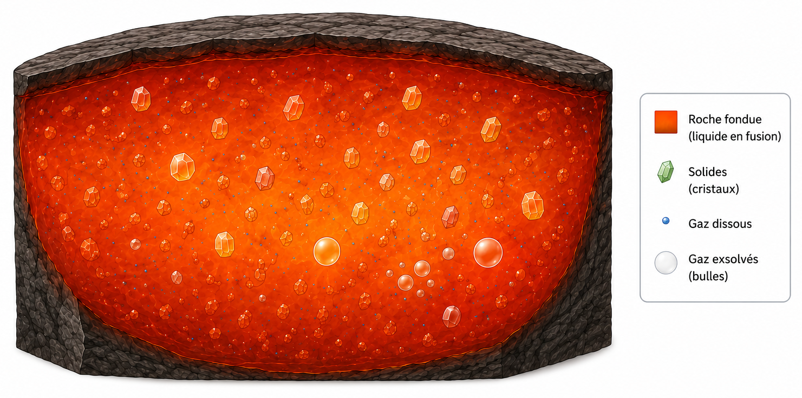
Liquide
Constitué d’éléments chimiques en fusion. Le liquide est le plus souvent silicaté (riche en SiO₂ et structuré par cet élément).
Solides
Des minéraux cristallisent au sein du liquide lorsque les conditions de pression (P), de température (T) et de composition (X) changent.
Gaz
Les principales espèces volatiles des magmas sont H₂O, CO₂, SO₂, HCl et HF. Initialement dissoutes dans le liquide, elles peuvent s’exsolver sous forme de bulles lorsque les conditions P–T–X changent et que la saturation de ces espèces chimiques est dépassée.
Les conditions P-T-X sont essentielles pour comprendre l’histoire d’un magma. Ces notions vont nous suivre tout au long du cours.
Pétrologie magmatique : une définition centrale
Pétrologie magmatique
Étude des roches résultant de la solidification d’un magma et des processus responsables de leur formation et de leur évolution.
Voici les étapes principales dans la vie d’un magma :
source
partielle
Ces étapes représentent le fil conducteur de la pétrologie magmatique, et suivent globalement les différents cours et travaux pratiques pour ce semestre.
Lien fort entre la pétrographie et la pétrologie
Pétrographie
C’est la description et la caractérisation des roches.
« Qu’est-ce que j’observe ? »
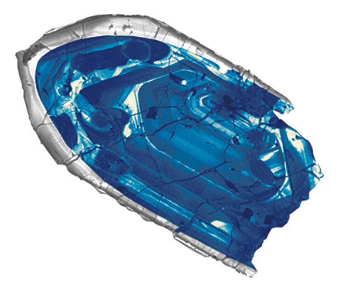
Pétrologie
C’est l’interprétation de la pétrographie et donc la compréhension des processus qui forment, modifient et structurent les roches.
« Qu’est-ce que cette roche nous raconte ? »

Qu’est-ce qu’une roche ?
De l’échelle atomique à l’échelle macroscopique
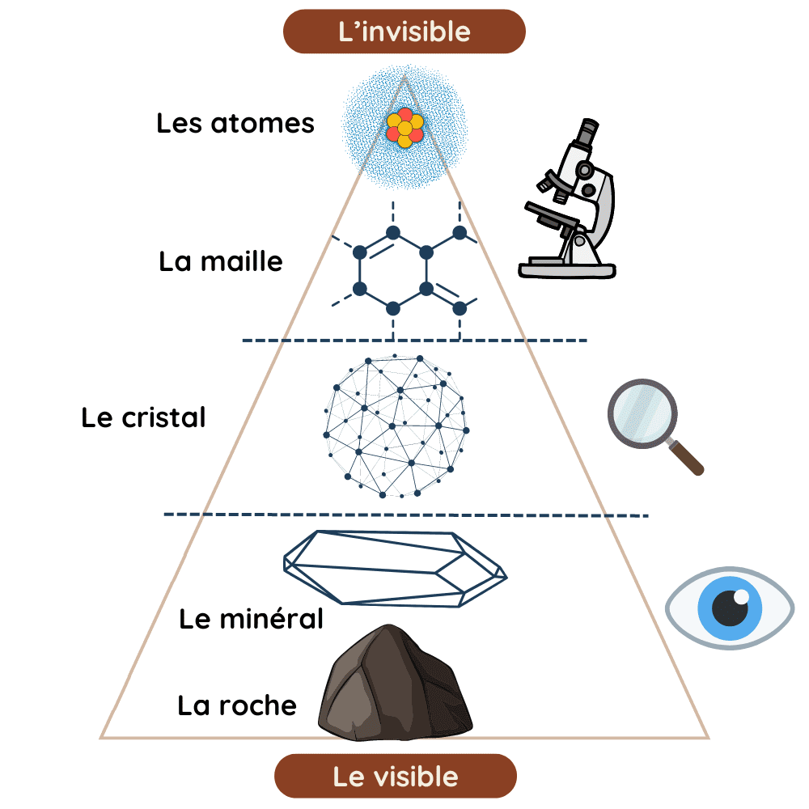
Les atomes et leurs arrangements définissent des mailles cristallines
Les atomes définissent la composition chimique. La maille cristalline est le plus petit volume géométrique répétitif qui permet de reconstruire tout le cristal par translation dans les trois directions de l’espace.
Les mailles cristallines définissent les cristaux et leurs structures
La structure cristalline décrit l’organisation complète des atomes (ou ions) dans le cristal : elle comprend la géométrie du réseau et la position des atomes à l’intérieur de la maille.
Les cristaux forment des minéraux qui sont les constituants des roches
Un minéral est une substance naturelle, généralement solide, définie par une composition chimique et une structure cristalline caractéristiques.
Roche vs. Minéral
Définition
Une roche est un matériau géologique naturel constitué d’un assemblage de minéraux et/ou d’autres constituants (verre amorphe ou matière organique…). Elle est caractérisée par sa composition minéralogique, sa composition chimique et sa texture.
Alternative à la cristallisation : Dans certains cas spécifiques, notamment lors d’un refroidissement rapide du magma, les cristaux n’ont pas le temps de se former et le liquide se fige en verre (structure amorphe, désorganisée par rapport aux structures cristallines).
Exemple du granite
Granite (roche magmatique plutonique) = quartz + feldspaths + biotites (minéraux)


Exemple de la picrite
Picrite (roche magmatique volcanique) = olivine (minéral) + matrice vitreuse (matière amorphe)


Rappel sur les trois grandes familles de roches
Les trois grandes familles de roches
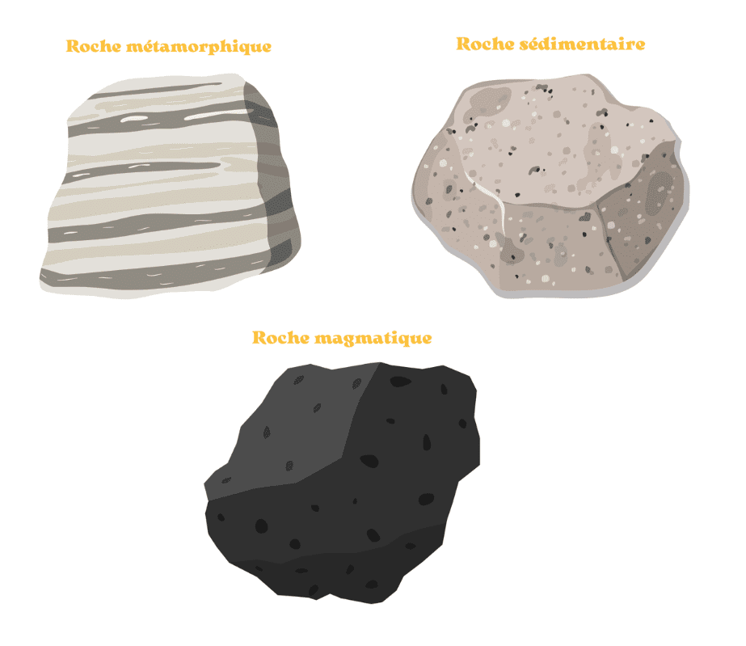
Roches magmatiques
Roches issues de la solidification d’un magma. Trois sous-catégories existent :
- Les roches mantelliques, qui forment le manteau terrestre et qui sont généralement à la source des deux autres sous-catégories.
- Les roches plutoniques, qui refroidissent en profondeur, formant des minéraux macroscopiques (texture grenue).
- Les roches volcaniques, qui refroidissent en surface, formant des verres amorphes et des minéraux plus ou moins gros (texture vitreuse, microlitique, ou porphyrique). Les espèces volatiles initialement dissoutes dans le magma en profondeur s’exsolvent sous forme de bulles de gaz à cause de la décompression et forment des roches plus ou moins riches en vésicules (texture ponceuse ou scoriacée).
Cycle des roches
Cycle des roches
Les trois familles de roches ne sont pas indépendantes : une roche peut être transformée et entrer dans un nouveau cycle, à la faveur de la géodynamique terrestre.

Fusion (ou fonte)
Fusion partielle des roches : formation d’un magma, puis solidification en roches magmatiques.
Érosion
Érosion, altération, transport et dépôt des matériaux : compaction et cimentation en roches sédimentaires.
Une roche magmatique volcanique peut aussi être considérée comme sédimentaire. C’est le cas notamment des pyroclastes (ou téphras). Un exemple concret est celui des cendres volcaniques qui sédimentent au sol lors d’éruptions volcaniques explosives (Séance 11).
Pression (P) et Température (T) sans fusion
Transformation à l’état solide des minéraux et des textures, sous de nouvelles conditions de P et T : formation des roches métamorphiques.
Quels outils va-t-on utiliser ?
Observer une roche à plusieurs échelles et comprendre son histoire
Cela nécessite l’utilisation de plusieurs outils et connaissances.
Échelle globale à locale : terrain
- Échelle : km → m
- Connaissance du contexte géologique
- Contextualisation et analyse de l’affleurement
Échelle macroscopique : échantillon
- Échelle : m → mm
- Analyse des composants
- Caractérisation de la nature des échantillons : couleur, texture, forme, structure, minéralogie…
Échelle micro- à nanométrique : laboratoire
- Échelle : mm → µm voire nm
- Préparation des échantillons
- Analyses pétrographiques (microscopie) et géochimiques (spectroscopie)
Cas d’étude
Roches volcaniques émises lors des éruptions de 2005 au Karthala (Comores) 🌐
Séance 3 : Le premier TP de ce cours consistera à identifier les caractéristiques générales et pétrologiques de diverses roches magmatiques, à travers ces trois échelles (Séance 3).
Exemple des éruptions de 2005 du Karthala - Terrain
Situation géographique et échantillonnages des roches
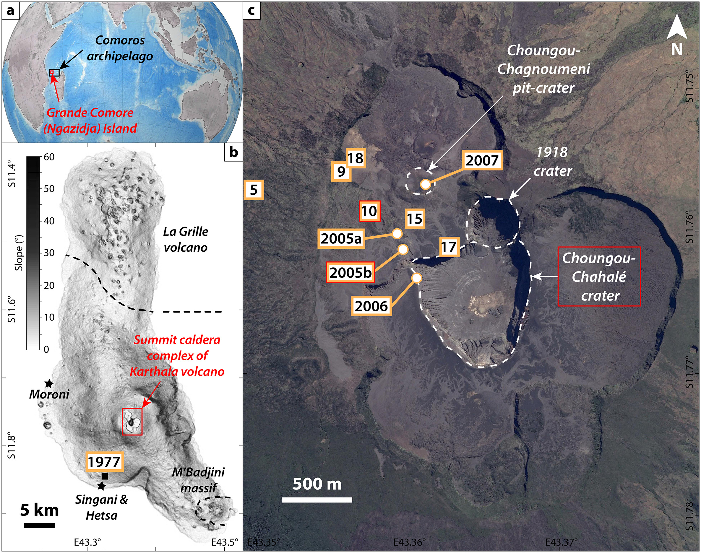
Exemple des éruptions de 2005 du Karthala - Terrain
Historique et contexte géologique local
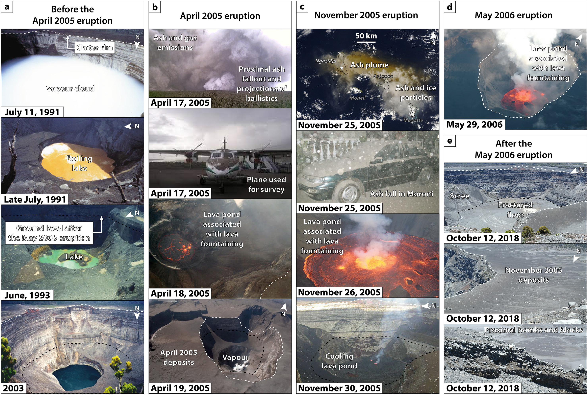
Exemple des éruptions de 2005 du Karthala - Terrain
Affleurement et log stratigraphique
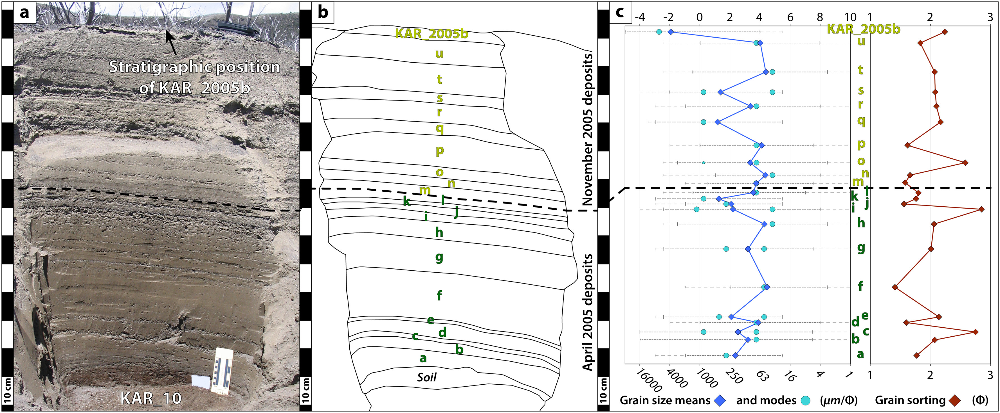
Exemple des éruptions de 2005 du Karthala - Échantillons
Trois types de particules prélevées dans les dépôts
L’échantillonnage représentatif des dépôts et l’identification des différents composants permettent de relier leurs caractéristiques à l’histoire de l’éruption volcanique et du magma qui en est la source.
Ponce

Scorie

Lithique

Exemple des éruptions de 2005 du Karthala - Laboratoire
Analyses microscopiques au Microscope Électronique à Balayage (MEB)
Grâce à ce type d’analyse, nous avons accès à des images microscopiques pour analyser les éléments invisibles à l’œil nu, comme les microcristaux et les vésicules de gaz. On observe clairement des textures différentes sur chacun des grains, qui correspondent à des histoires de cristallisation et de dégazage magmatiques différentes.
Ponce

Scorie

Lithique

Exemple des éruptions de 2005 du Karthala - Laboratoire
Analyses géochimiques par spectroscopie (microsonde électronique et spectrométrie à plasma à couplage inductif)
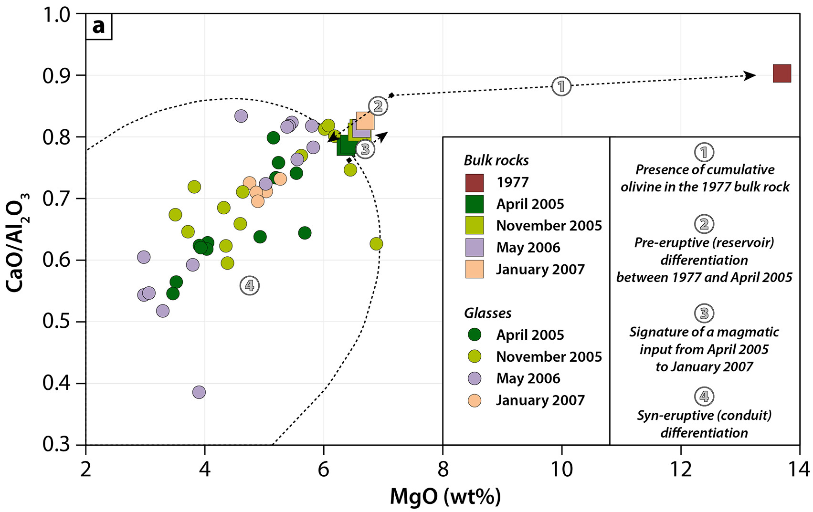
Interprétation géochimique
Des analyses des échantillons en roche totale ou in situ (différentes techniques de préparation d’échantillon et de spectroscopies) permettent de caractériser la composition globale du magma, ainsi que de la matrice vitreuse résiduelle après cristallisation.
Les échantillons sont composés d’olivine (riche en MgO), de plagioclase et de pyroxènes (riches en CaO et Al₂O₃). Ce type de graphique permet donc de voir l’effet de la cristallisation de ces minéraux sur la composition chimique de la matrice résiduelle vitreuse (Séances 6 et 7).
Exemple des éruptions de 2005 du Karthala - Intégration des informations
Épaisseur et répartition des dépôts
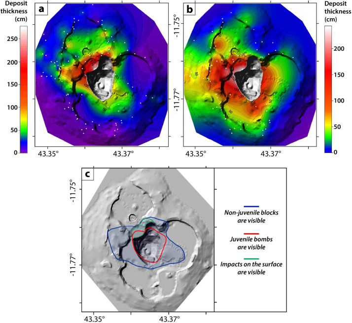
Implications sur les aléas
Des dépôts de plusieurs mètres d’épaisseur témoignent d’un impact local et régional important.
La disposition, la dimension et la géométrie des dépôts permettent de distinguer les retombées de cendres volcaniques, les impacts de balistiques et les coulées pyroclastiques : les aléas associés ne sont pas les mêmes (Séance 11).
Exemple des éruptions de 2005 du Karthala - Intégration des informations
Modèle du système magmatique superficiel
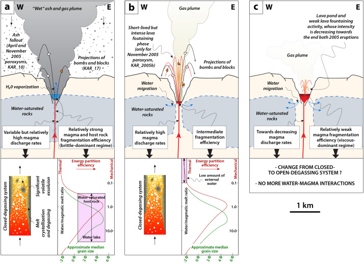
Implications sur les processus magmatiques mis en jeu
- Des grains aux textures différentes enregistrent des histoires de cristallisation et de dégazage magmatiques différentes, d’où les différents dynamismes éruptifs observés durant l’éruption (explosions de cendres, fontaines, et lac de lave)
- L’identification des différents composants guide la sélection des analyses de laboratoire.
- Les compositions révèlent un magma basaltique et une interaction magma–eau, appelée phréatomagmatisme, capable de produire de fortes explosions et qui laisse des signatures typiques sur les échantillons.
- La taille des cristaux et des vésicules permet de contraindre la durée de stockage en profondeur du magma et sa vitesse de remontée pendant l’éruption.
Plan du cours
Mardi, 14h15-16h00 · PER 07, salle 2.301
| Date | Séance | Cours / TP |
|---|---|---|
| 15.09.2026 | 1 | Pétrologie magmatique : introduction du cours + les constituants de la Terre |
| 22.09.2026 | 2 | Les roches magmatiques I : pétrographie et classification |
| 29.09.2026 | 3 | Travaux pratiques — Les roches magmatiques II : exercices de reconnaissance |
| 06.10.2026 | 4 | La naissance des magmas I : nature des roches sources et réservoirs terrestres |
| 13.10.2026 | 5 | La naissance des magmas II : fusion partielle des roches sources et séries magmatiques |
| 20.10.2026 | 6 | L’évolution des magmas I : différenciation par mélange, contamination et cristallisation |
| 27.10.2026 | 7 | Travaux pratiques — L’évolution des magmas II : utilisation de diagrammes de phase |
| 03.11.2026 | 8 | La solidification des magmas I : roches plutoniques |
| 10.11.2026 | 9 | La solidification des magmas II : roches volcaniques |
| 17.11.2026 | 10 | L’impact du magmatisme I : géodynamique terrestre |
| 24.11.2026 | 11 | L’impact du magmatisme II : volcanisme |
| 01.12.2026 | 12 | Travaux pratiques — L’impact du magmatisme III : propriétés magmatiques et dynamiques éruptives |
| 08.12.2026 | — | Pas de cours — jour férié |
| 15.12.2026 | 13 | Magmatisme extraterrestre ; discussions |
| Février 2027 | Examen | - |
Les constituants de la Terre
Après la pause
Pourquoi le contexte terrestre est essentiel pour comprendre la pétrologie magmatique ?
Pourquoi parler des constituants de la Terre ?
L’origine et les propriétés des magmas dépendent initialement des conditions de formation et d’évolution de la planète.
Propriétés primaires des magmas
- Composition chimique X
- Température T
- Pression P
Propriétés héritées des magmas
- Densité
- Viscosité
- Solubilité des espèces volatiles
Impacts sur les magmas
- Flottabilité
- Modes de transport (ductile par diapir, fragile par fracturation)
- Variabilité des éruptions volcaniques
- Évolution de l’atmosphère
- ….
De l’Univers au système solaire
D’où vient la matière qui compose notre environnement ?
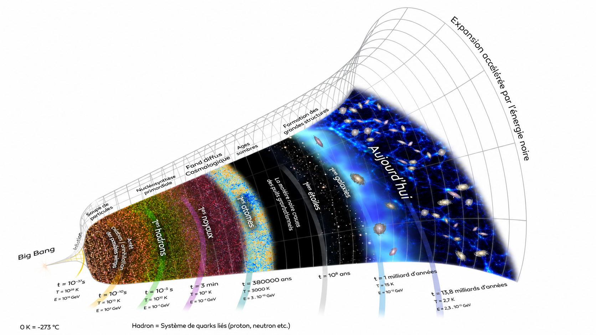
Formation du système solaire
Les Nébuleuses
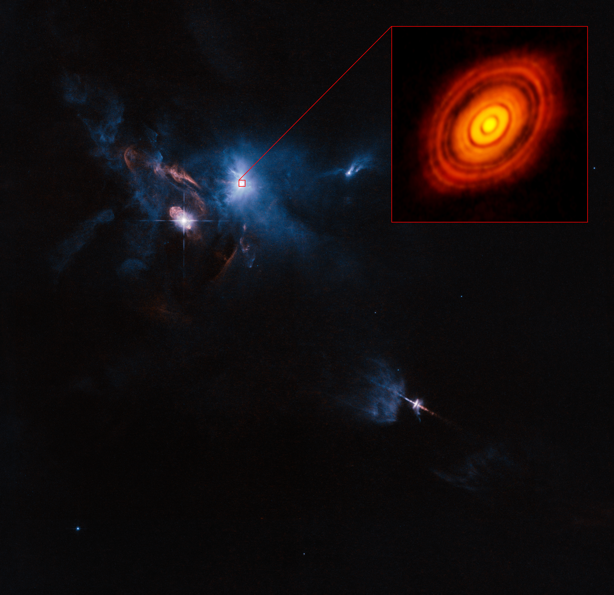
Les disques protoplanétaires
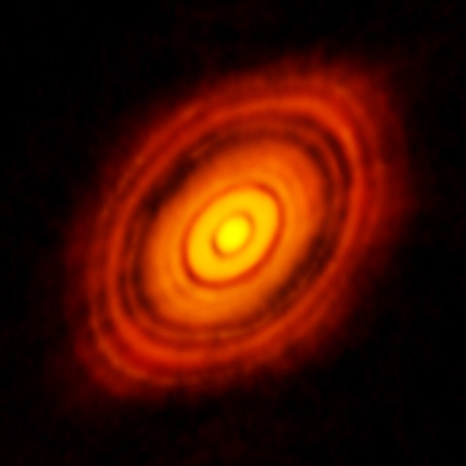
Comment se forment les planètes ?
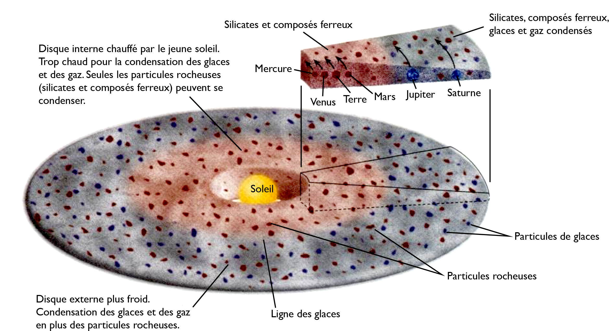
Planètes telluriques et magmatisme
Les planètes telluriques partagent des caractéristiques plus ou moins communes
| Corps | Observation | Interprétation |
|---|---|---|
| Mercure | volcanisme ancien abondant, aujourd’hui éteint | petite planète ayant perdu rapidement une grande partie de sa chaleur interne |
| Vénus | volcanisme encore actif, mais absence de tectonique des plaques | planète encore chaude et géologiquement active, avec un mode de renouvellement de la lithosphère différent de celui de la Terre |
| Terre | magmatisme actif associé notamment à la tectonique des plaques | production et recyclage continus de la croûte océanique |
| Mars | volcanisme majeur dans le passé, ayant persisté tardivement dans son histoire | planète ayant globalement refroidi plus vite que la Terre, avec diminution progressive de son activité interne |
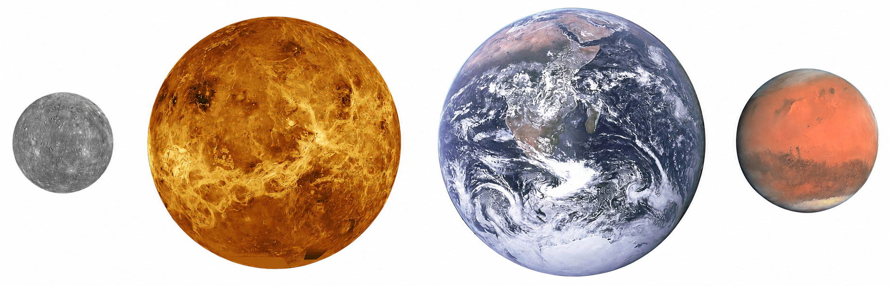
Formation de la Terre primitive
Accrétion, Terre primitive, et océan magmatique
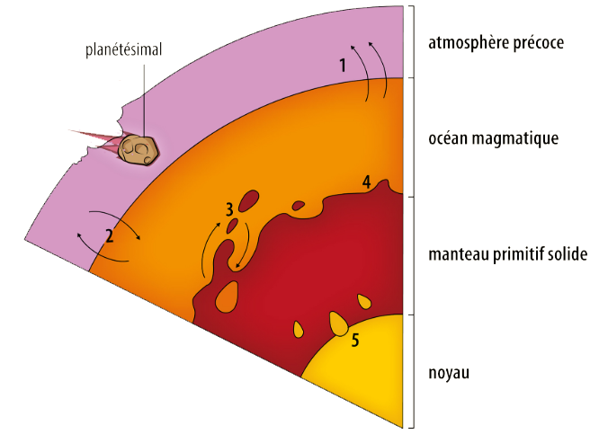
- L’accrétion de planétésimaux contribue à une fusion généralisée de la Terre primitive.
- L’étude des météorites permet de contraindre la composition initiale du Système solaire et de la Terre.
Étapes de l’évolution primitive
1 - Dégazage magmatique : Exsolution des espèces volatiles initialement dissoutes dans l’océan magmatique et formation de l’atmosphère primitive.
2 - Équilibre atmosphère–océan magmatique : Échanges géochimiques continus entre l’atmosphère et le magma.
3 - Équilibre manteau–océan magmatique : Idem.
4 - Cristallisation de l’océan magmatique : Refroidissement et cristallisation progressive, pouvant se produire depuis la base (manteau) et/ou depuis la surface (croûte primitive).
5 - Formation du noyau : Séparation du métal riche en éléments sidérophiles (Fe, Ni) et migration vers le centre de la Terre sous l’effet de la gravité.
Le cas de la formation de la Lune
La thèse d’un impact géant et précoce
- L’hypothèse dominante est celle d’un impact géant, environ 50 à 100 millions d’années après le début de la formation du Système solaire (âge du Système solaire et de la Terre situé entre 4,5 et 4,6 milliards d’années).
- Collision entre la proto-Terre et une protoplanète appelée Théia.
- Éjection en orbite de matériaux silicatés fortement chauffés, fondus ou vaporisés.
- Formation d’un disque de débris, puis accrétion progressive de la Lune.
- Refroidissement, océan magmatique lunaire et différenciation interne.
- Les analyses des échantillons Apollo confirment une composition chimique très commune entre la Terre et la Lune.
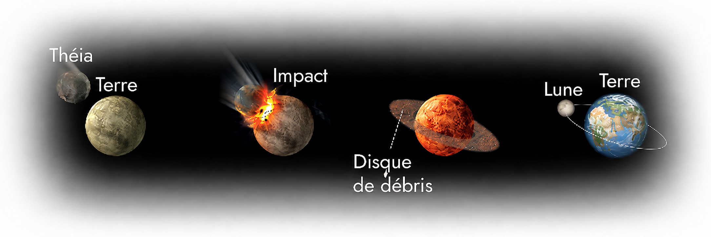
Différenciation planétaire
Les éléments chimiques se répartissent selon leur densité et leurs affinités chimiques
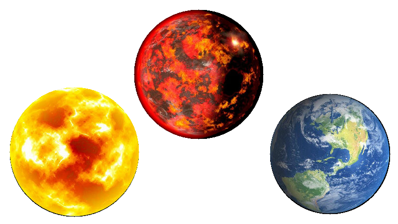
Séparation physique des phases :
- Les phases les plus denses ont tendance à s’enfoncer sous l’effet de la gravité.
- Les phases moins denses peuvent au contraire remonter ou flotter.
Autres mécanismes de différenciation
Partition chimique des éléments :
- Les éléments sidérophiles (Fe et Ni) se concentrent dans le métal.
- Les éléments lithophiles (Si, Al, Ti, Na, K, Ca, Mg, U, Th, REE) restent préférentiellement dans les silicates.
Cristallisation progressive de l’océan magmatique :
- Les éléments compatibles s’intègrent préférentiellement dans les cristaux
- Les éléments incompatibles restent préférentiellement dans le liquide résiduel.
Dégazage :
- Les éléments volatils deviennent moins solubles lors du refroidissement et de la décompression. Ils sont donc transférés vers l’atmosphère primitive.
Différenciation planétaire
Formation des grands réservoirs
Noyau → métal Fe–Ni + éléments sidérophiles.
Manteau → silicates riches en Mg et Fe.
Le Fe n’est pas uniquement sidérophile. Il a aussi une affinité pour l’oxygène (chalcophile/lithophile). Pendant la différenciation, une partie du Fe s’est liée à l’oxygène et au silicium. Ces oxydes et silicates de fer, plus légers que le fer métallique pur, sont restés en surface pour former le manteau, puis la croûte.
Croûte → produits issus de liquides plus différenciés et moins denses.
Atmosphère → espèces volatiles dégazées.
Différenciation planétaire : Mise en place progressive d’une structure interne chimiquement et physiquement stratifiée.
Compatibilité des éléments lors de la fusion ou la cristallisation d’une roche
Le comportement d’un élément chimique lors de la fusion ou de la cristallisation d’une roche dépend de son coefficient de partage solide/liquide, \(D\) : \(D = C_{\text{solide}} / C_{\text{liquide}}\) (\(C\) désignant la concentration de l’élément chimique en question)
Éléments compatibles (\(D > 1\))
S’intègrent facilement dans les cristaux.
- Mécanisme : rayon et charge proches des ions cristallins majeurs (règles de Goldschmidt).
- Évolution : leur concentration chute rapidement dans le liquide résiduel.
- Exemples : Ni, Cr (dans l’olivine et le pyroxène), Sr (dans le plagioclase).
- Signature : riches dans les roches primitives (péridotites, basaltes).
Éléments incompatibles (\(D < 1\))
Restent exclus et se concentrent dans le liquide.
- Mécanisme : taille trop grande ou charge trop forte pour la maille cristalline.
- Évolution : s’accumulent dans le liquide résiduel au fil de la cristallisation fractionnée.
- Exemples : K, Rb, Zr, Th, U, terres rares (REE).
- Signature : riches dans les roches évoluées (granites, pegmatites).
Structure interne actuelle de la Terre
Une vision intégrée
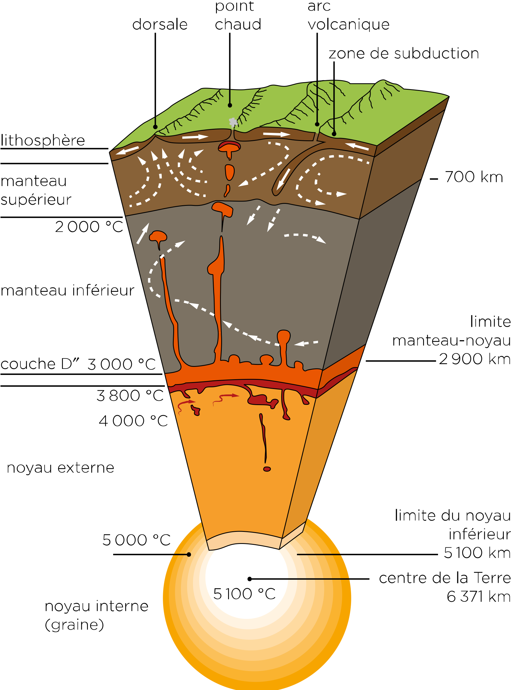
Structure interne actuelle de la Terre
Deux visions : géochimie vs. géophysique
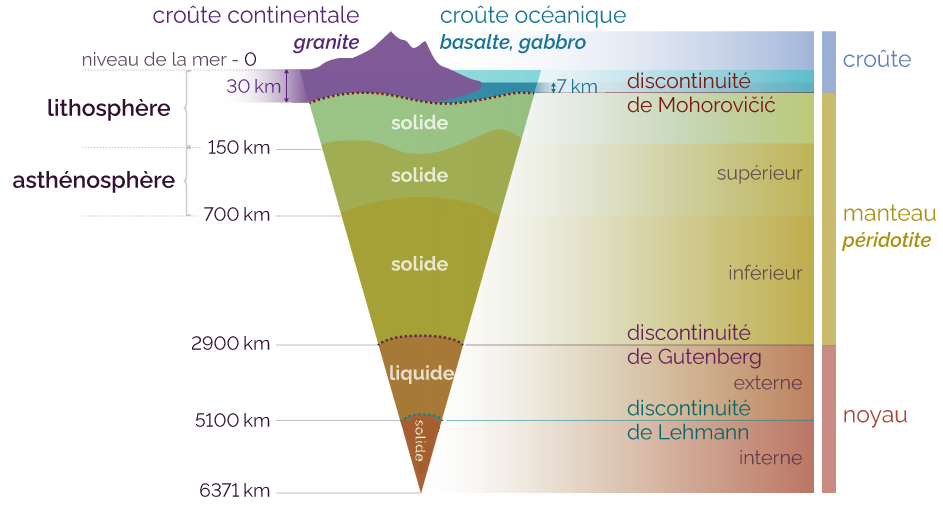
Modèle géochimique
Fondé sur la composition chimique de la Terre.
Croûte / Manteau / Noyau
Modèle géophysique et rhéologique
Fondé sur le comportement mécanique des roches, notamment mis en évidence par la sismologie.
Lithosphère / Asthénosphère / Mésosphère (partie du manteau sous l’asthénosphère) / Noyau externe / Noyau interne (graine)
Modèle géochimique vs. géophysique
Modèle géochimique
| Enveloppe | Composition dominante | Idée simple |
|---|---|---|
| Croûte continentale | silicates riches en Al, composition moyenne granitique | moins dense, épaisse |
| Croûte océanique | basaltes et gabbros | plus dense, plus fine |
| Manteau | silicates riches en Mg et Fe, péridotite | plus de 80 % du volume de la Terre |
| Noyau | alliage Fe-Ni | réservoir métallique très dense |
Modèle géophysique
| Enveloppe | Comportement | Rôle |
|---|---|---|
| Lithosphère | rigide et cassante | plaques tectoniques |
| Asthénosphère | plus chaude, ductile, visqueuse | permet le mouvement des plaques |
| Mésosphère | manteau profond solide | convection mantellique profonde |
| Noyau externe | liquide | champ magnétique terrestre |
| Noyau interne | solide | graine à haute pression |
Modèle PREM
PREM : Preliminary Reference Earth Model
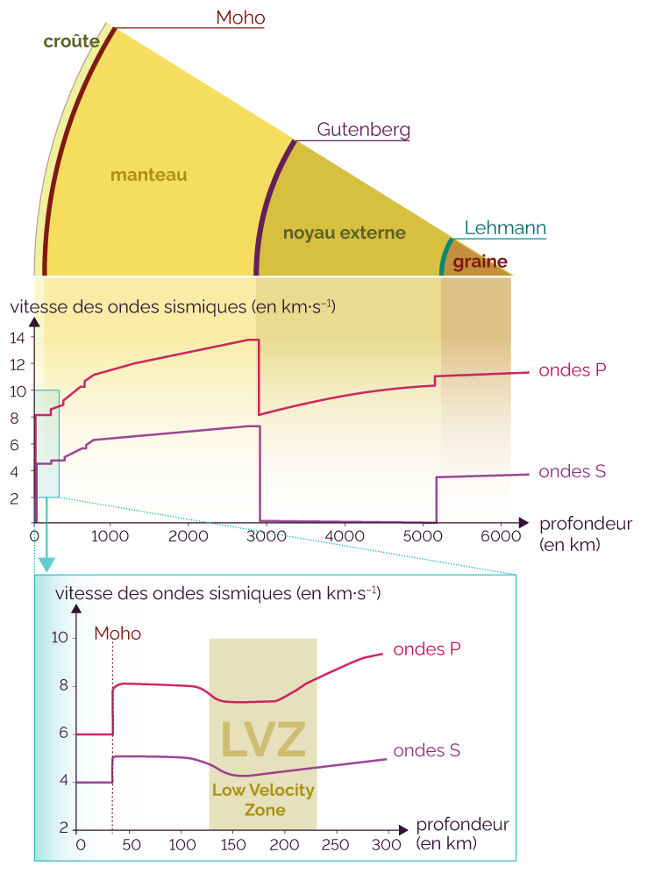
Utilité et portée du PREM
Le PREM est un modèle de référence 1D de la Terre, qui décrit comment les principales propriétés physiques de la Terre varient avec la profondeur. Il fournit notamment la densité, les vitesses des ondes sismiques P et S, les propriétés élastiques des matériaux, la pression, et la gravité.
Le PREM est une Terre moyenne de référence, pas une représentation exacte des variations locales de notre planète.
LVZ (Low Velocity Zone) : Zone située au sommet de l’asthénosphère (manteau supérieur), juste sous la lithosphère rigide (profondeur entre 100 et 250 km environ). C’est une zone caractérisée par une anomalie sismique, notamment la chute de la vitesse des ondes en raison de la plasticité des roches. Les conditions de température et de pression provoquent une fusion partielle (~1 %) de la péridotite, ce qui crée un milieu ductile qui permet le découplage mécanique et le glissement des plaques tectoniques.
Compositions chimiques de la Terre
Des valeurs de référence
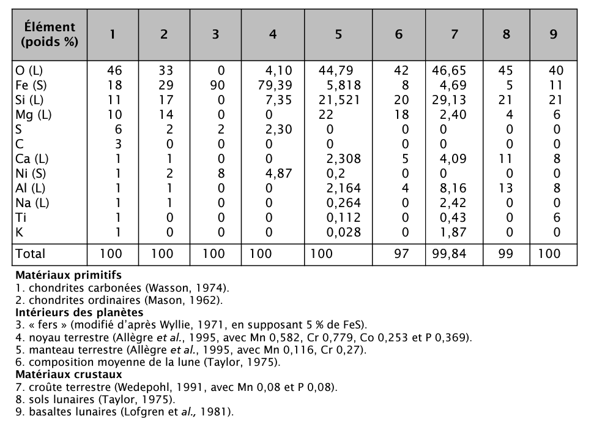
Réservoirs chimiquement distincts
La différenciation planétaire a produit des réservoirs chimiquement distincts :
Noyau terrestre dominé par le Fe et le Ni : les éléments sidérophiles ont migré vers le centre
Manteau terrestre dominé par O, Mg, Si et Fe : une composition silicatée riche en Mg et Fe
Croûte terrestre enrichie en O, Si, Al, Ca, Na et K par rapport aux réservoirs profonds
Quid des météorites (chondrites) : De quoi sont-elles représentatives ?
Gradient de pression
Le gradient de pression dépend de la densité des roches et de la profondeur
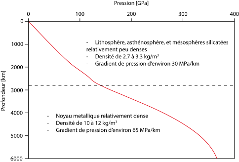
Calcul et interprétation
Le gradient de pression terrestre est défini par :
\[ \Delta P = \Delta z \times g \times \rho \]
où \(\Delta P\) désigne la variation de pression, \(\Delta z\) la variation de profondeur, \(g\) l’intensité de la pesanteur (\(9{,}81\ \mathrm{m\,s^{-2}}\) à la surface de la Terre) et \(\rho\) la densité de la roche.
- Avec une densité comprise entre 2,7 et 3,3 pour les roches silicatées de la croûte et du manteau, la pression augmente de façon quasi linéaire avec la profondeur.
- Le gradient augmente cependant au passage vers le noyau, car les métaux qui le constituent, principalement le Fe et le Ni, sont plus denses.
- Cependant, l’intensité de la pesanteur diminue en se rapprochant du centre de la Terre, d’où la diminution progressive du gradient vers la graine.
Origine de la chaleur
Sans chaleur, pas de magmatisme
Aujourd’hui, le bilan thermique de la Terre provient de deux sources principales :
- La chaleur primordiale (environ 20 % à 50 %) : elle comprend la chaleur accumulée lors de l’accrétion.
- La chaleur radiogénique (environ 50 % à 80 %) : elle est produite en continu par la désintégration radioactive d’éléments instables présents dans le manteau et la croûte, principalement l’uranium, le thorium et le potassium.
La chaleur latente de cristallisation est presque négligeable dans ce bilan et ne joue que quelques pourcents voire moins.
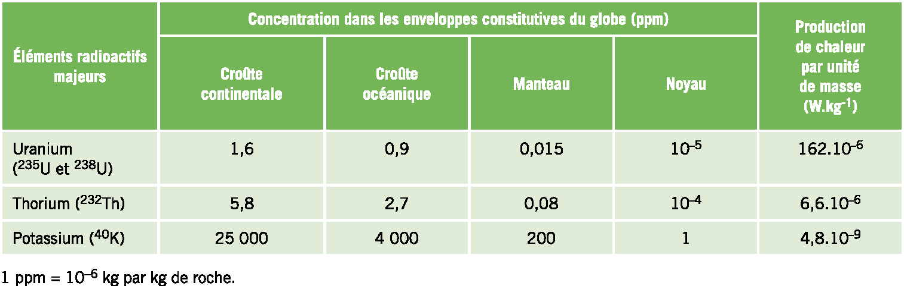
Transferts de chaleur
Mécanismes de transfert thermique
La chaleur se propage grâce à différents phénomènes physiques :
- La radiation : transfert par rayonnement.
- La conduction : transfert sans déplacement global de matière.
- La convection : transfert par déplacement de matière.
- L’advection : transport de chaleur latéral par mouvement de fluides.
Schéma et réflexion
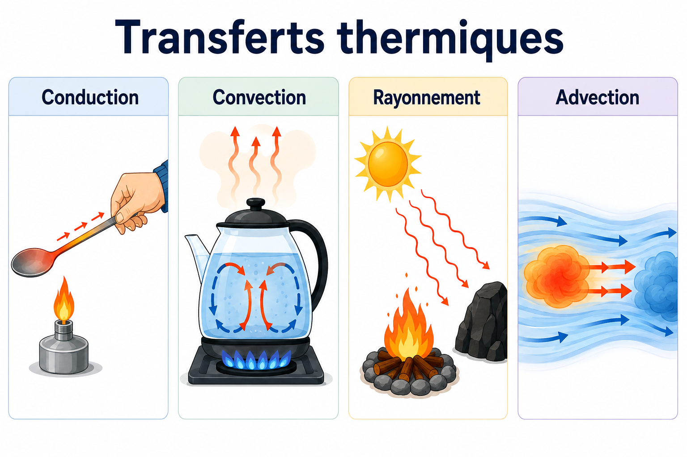
Réflexion : Comment la chaleur est-elle transmise à travers les différentes couches terrestres ?
Gradient thermique
Gradient non linéaire
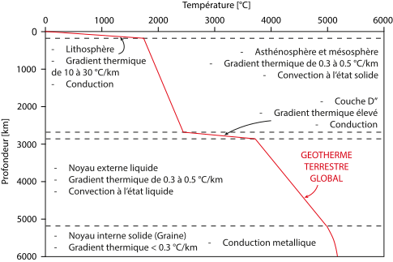
Le gradient géothermique varie selon les matériaux que la chaleur traverse.
- Milieu fragile et rigide (croûte et lithosphère) : conduction thermique.
- Milieu ductile et visqueux (asthénosphère et manteau profond) : convection thermique.
Le gradient géothermique est plus faible dans les zones de convection. Qu’est-ce que cela signifie pour les matériaux asthénosphériques profonds ?
Flux thermique global et tectonique des plaques
Flux thermique à la surface terrestre
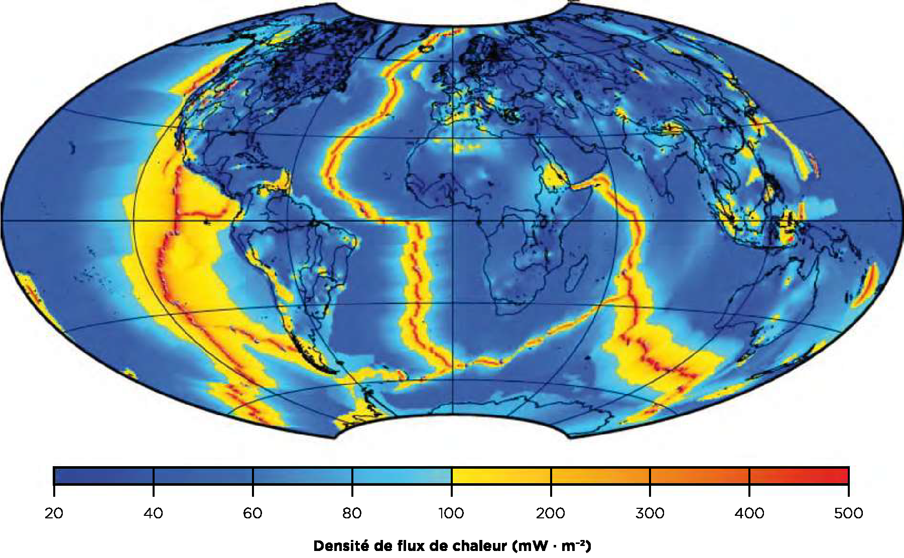
Le flux thermique terrestre n’est pas homogène
Il est particulièrement lié :
- Aux dorsales océaniques
- Aux zones de subduction
- Aux points chauds
- À l’âge de la lithosphère océanique
- À la circulation convective du manteau
La Terre évacue sa chaleur en partie grâce à la tectonique des plaques.
Formation d’un magma : notion de solidus et de liquidus
L’importance du lien entre P-T-X
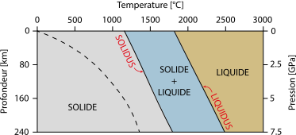
Les éléments importants d’un système magmatique
- Une roche peut être très chaude sans fondre : son état dépend à la fois de sa composition X (qui définit son géotherme : ligne pointillée), de sa température T (axe x) et de sa pression P (axe y).
- La composition X de la roche définit aussi son solidus et son liquidus.
- Solidus : limite à partir de laquelle une roche commence à fondre.
- Liquidus : limite au-dessus de laquelle le système est entièrement liquide.
Géothermes et fusion
Différents cas de figure présents sur Terre
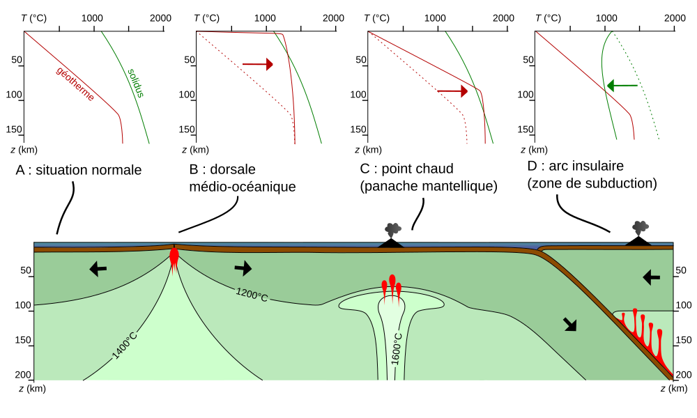
La fusion partielle des magmas : Séance 5
Messages à retenir
- Le magma est un système multiphasique complexe.
- Les roches étudiées en pétrologie magmatique incluent des roches mantelliques, plutoniques et volcaniques.
- L’intégration de plusieurs échelles d’étude est nécessaire pour comprendre les processus magmatiques mis en jeu.
- La Terre actuelle résulte d’une différenciation précoce et d’un refroidissement progressif.
- Les enveloppes terrestres peuvent être décrites par composition ou par comportement mécanique.
- Il en résulte des gradients de pression et de température spécifiques aux différentes structures terrestres.
- Pression, température et composition des roches contrôlent la fusion dans le manteau supérieur.